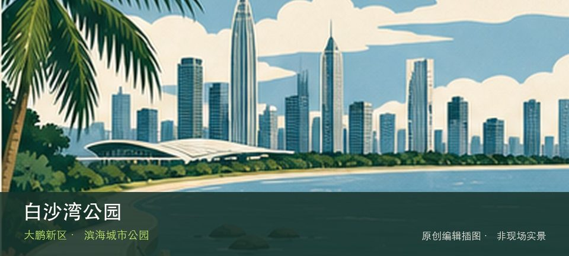

适合谁
适合海岸观察、轻量步行和愿意服从海况边界的人；不适合追逐未开放穿越线。

SHENZHEN GUIDE · 302
坝光展厅至惠州小桂方向 · 滨海城市公园
白沙湾公园位于坝光展厅至惠州小桂方向，坝光西端的海湾公园连接展厅、滨海步道与跨城海岸视野，也是长线远足的分段入口。从白沙湾滨海步道转向坝光展厅与远足接口时，地点的空间、历史或使用方式才会变得清楚。海岸体验取决于白沙湾滨海步道与坝光展厅与远足接口当天的风浪、潮位和运营边界，不宜把旧照片当成实时承诺。先确定安全退路和返程节点，遇雷雨、台风影响或封闭提示就缩短行程。
WHY GO
适合海岸观察、轻量步行和愿意服从海况边界的人；不适合追逐未开放穿越线。
第一次到白沙湾公园先把白沙湾滨海步道设为主目标，再视天气和现场边界决定是否前往坝光展厅与远足接口；返程节点应在出发前确定。
公共交通先到坝光展厅至惠州小桂方向片区，再以白沙湾公园公开参观入口为终点；多入口地点须按计划游线选择入口，并预先锁定返程站点。
自驾只使用白沙湾公园官方或片区正规停车场；海滨旺季先查预约、限行和接驳，满位后不要在村道或应急通道等候。
10 月至次年 4 月体感较舒适；夏季亲水先查海况，雷暴、台风影响或大浪提示下不靠近水线。
NEARBY IDEAS
 编辑配图·非现场实景
编辑配图·非现场实景
大鹏蓝海人才公园位于坝光片区海心路，约18公顷滨海公园以坝光湾、开阔草地和人才主题公共艺术展现新区产业海岸。
 授权实景图
授权实景图
坝光银叶树湿地园位于葵涌坝光，古银叶树群、滨海湿地和坝光村落记忆组成珍贵生态空间，树木根系与潮间带都需要保持距离。
 编辑配图·非现场实景
编辑配图·非现场实景
高岭古村位于南澳街道高岭片区，山海之间的传统村落以石屋、旧巷和坡地聚落关系形成不同于沙滩景区的历史景观。